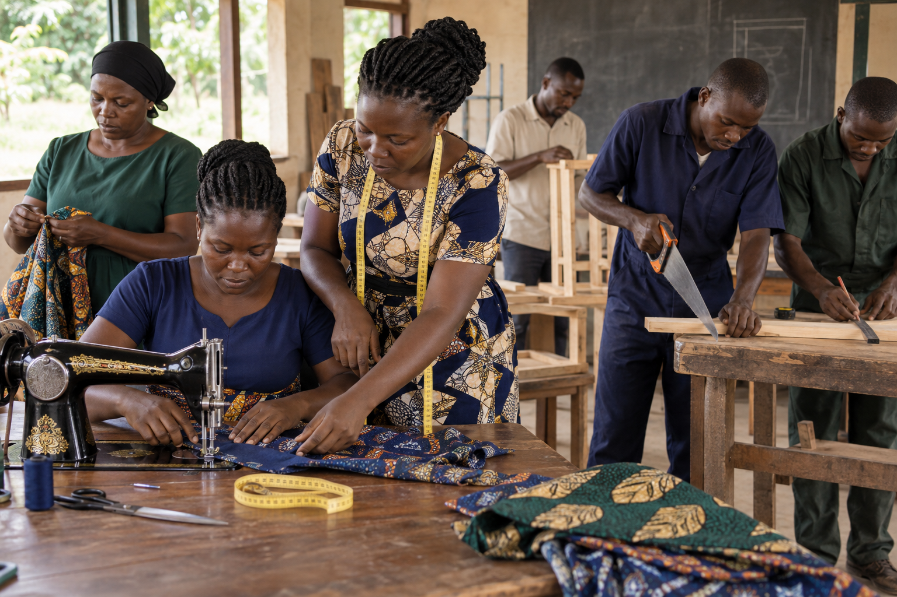

Construction
Planned practical foundational skills.
Vocational & skills training
Proposed training designed around useful capabilities and local opportunity.

Sample imagePlanned training
Possible areas include construction, information technology, agriculture, tailoring and entrepreneurship.
GEI Uganda intends to collaborate with Goodwill Nursery and Primary School in Buwooya Sub-county, Buvuma District. Final programme roles should be confirmed.
Planned practical foundational skills.
Proposed accessible digital learning.
Practical production and livelihood skills.
Proposed hands-on garment skills.
Enterprise planning and responsible management.
Interest form
Do not submit National IDs or sensitive information.
GEI Uganda welcomes conversations with qualified trainers and institutions. Upcoming training details will appear after confirmation.
Offer support →